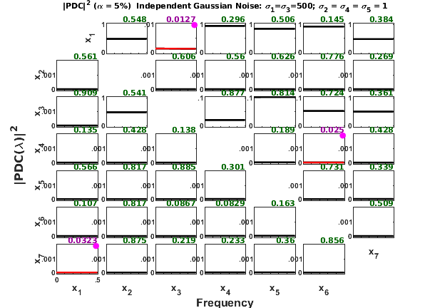
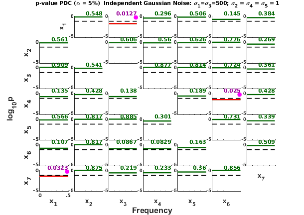
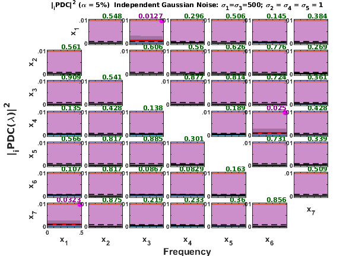

WINTERHALDER ET AL.(2005) - 7-dimension unbalanced random independent variables UNBALANCED RANDOM INDEPENDENT VARIABLES
Description:
Expanded to seven variables and modified to consider unbalanced variances with idea borrowed from: Winterhalder et al. Comparison of linear signal processing techniques to infer directed interactions in multivariate neural systems. Signal Processing 85:2137--2160, 2005. http://dx.doi.org/10.1016/j.sigpro.2005.07.011
Example: Seven random independent variables with unbalanced variances. Variant of Random Independent Process with 7 variables') with following variances:
Contents
- See also: mvar, mvarresidue, asymp_pdc, asymp_dtf, gct_alg,
- Data sample generation
- Data generation function:
- PDC/DTF estimation and analysis parameters
- Data pre-processing: detrending and standardization options
- MVAR model estimation
- Testing the adequacy of MAR model fitting through Portmanteau test
- Granger causality test (GCT) and instantaneous GCT
- PDC, threshold and confidence interval calculations.
- Plotting options set up, mostly cosmetic for xplot.m routine:
- Original PDC plot
- PDC p-values plot
- Information PDC estimation and analysis parameters
- Information PDC plot
- Remarks on false-positive connectivity detection ratio:
- General remarks about xplot features:
See also: mvar, mvarresidue, asymp_pdc, asymp_dtf, gct_alg,
igct_alg, xplot, xplot_pvalues
% (C) Koichi Sameshima & Luiz A. Baccalá, 2022. % See file license.txt in installation directory for licensing terms.
Data sample generation
clear; clc; format compact; format short flgPrintScreen = 'Screen'; %'Screen' or 'Print' nBurnIn = 1000; % number of points discarded at beginning of simulation nPoints = 5000; % number of analyzed samples points alpha = 0.05; % Significance level for PDC/DTF null hypothesis test
Data generation function:
u = fwinterhalder2005_variant(nPoints, nBurnIn);
chLabels = {'x_1';'x_2';'x_3';'x_4';'x_5';'x_6';'x_7'};%chLabels = [];
fs = 1; % Normalized sampling frequency
======================================================================
Winterhalder et al. Signal Processing. 85:2137--60, 2005
Variant of Random Independent Process with 7 variables
[sigma1=500|sigma2=1|sigma3=500|sigma4=1|sigma5=1|sigma6=1|sigma7=1]
======================================================================
PDC/DTF estimation and analysis parameters
% Common routine segment for all examples
Data pre-processing: detrending and standardization options
flgDetrend = 1; % 1: Detrending the data set flgStandardize = 0; % 0: No standardization % Checking data dimension [nChannels,nSegLength] = size(u); if nChannels > nSegLength u = u.'; [nChannels,nSegLength] = size(u); end % Detrending if flgDetrend for i = 1:nChannels, u(i,:) = detrend(u(i,:)); end disp('Time series were detrended.'); end % Standardization if flgStandardize for i = 1:nChannels, u(i,:) = u(i,:)/std(u(i,:)); end disp('Time series were scale-standardized.'); end;
Time series were detrended.
MVAR model estimation
maxIP = 30; % maximum model order to consider. alg = 1; % 1 = Nutall-Strand MVAR estimation algorithm criterion = 1; % 1 = AIC, Akaike Information Criteria disp('Running MVAR estimation and GCT analysis routines.') [IP,pf,A,pb,B,ef,eb,vaic,Vaicv] = mvar(u,maxIP,alg,criterion); disp(['Number of channels = ' int2str(nChannels) ' with ' ... int2str(nSegLength) ' data points; MAR model order = ' int2str(IP) '.']);
Running MVAR estimation and GCT analysis routines. maxOrder limited to 30 IP=1 vaic=422447.654639 IP=2 vaic=422507.924155 Number of channels = 7 with 5000 data points; MAR model order = 1.
Testing the adequacy of MAR model fitting through Portmanteau test
h = 20; % testing lag value MVARadequacy_signif = 0.05; % VAR model estimation adequacy significance % level aValueMVAR = 1 - MVARadequacy_signif; % Confidence value for the testing flgPrintResults = 1; % flag = 1, print analysis results [Pass,Portmanteau,st,ths] = mvarresidue(ef,nSegLength,IP,aValueMVAR,h,... flgPrintResults);
====================================================================================================
MVAR RESIDURES TEST FOR WHITENESS
----------------------------------------------------------------------------------------------------
Good MAR model fitting! Residues white noise hypothesis NOT rejected.
Pass = 0.0326531
st = 853.301
Granger causality test (GCT) and instantaneous GCT
gct_signif = alpha; % Granger causality test significance level igct_signif = alpha; % Instantaneous GCT significance level flgPrintResults = 1; % Flag to control printing gct_alg.m results on command window. [Tr_gct, pValue_gct] = gct_alg(u,A,pf,gct_signif,flgPrintResults); [Tr_igct, pValue_igct] = igct_alg(u,A,pf,igct_signif,flgPrintResults);
====================================================================================================
GRANGER CAUSALITY TEST
----------------------------------------------------------------------------------------------------
Connectivity matrix:
NaN 0 1 0 0 0 0
0 NaN 0 0 0 0 0
0 0 NaN 0 0 0 0
0 0 0 NaN 0 1 0
0 0 0 0 NaN 0 0
0 0 0 0 0 NaN 0
1 0 0 0 0 0 NaN
Granger causality test p-values:
NaN 0.5481 0.0127 0.2955 0.5065 0.1448 0.3839
0.5608 NaN 0.6056 0.5599 0.6256 0.7765 0.2689
0.9094 0.5412 NaN 0.8774 0.8139 0.7239 0.3608
0.1355 0.4279 0.1377 NaN 0.1889 0.0250 0.4278
0.5655 0.8168 0.8848 0.3008 NaN 0.7311 0.3390
0.1071 0.8169 0.0867 0.0829 0.1633 NaN 0.5090
0.0323 0.8751 0.2192 0.2328 0.3602 0.8562 NaN
====================================================================================================
INSTANTANEOUS GRANGER CAUSALITY TEST
----------------------------------------------------------------------------------------------------
Instantaneous connectivity matrix:
NaN 1 0 0 0 0 0
1 NaN 0 0 0 0 0
0 0 NaN 0 0 0 0
0 0 0 NaN 0 0 0
0 0 0 0 NaN 0 0
0 0 0 0 0 NaN 0
0 0 0 0 0 0 NaN
Instantaneous Granger Causality test p-values:
NaN 0.0142 0.6654 0.5749 0.8886 0.7466 0.1714
0.0142 NaN 0.9960 0.9906 0.1014 0.2776 0.7924
0.6654 0.9960 NaN 0.3717 0.9967 0.8153 0.7484
0.5749 0.9906 0.3717 NaN 0.8090 0.7841 0.4685
0.8886 0.1014 0.9967 0.8090 NaN 0.2990 0.1889
0.7466 0.2776 0.8153 0.7841 0.2990 NaN 0.7743
0.1714 0.7924 0.7484 0.4685 0.1889 0.7743 NaN
>>>> There is a pair of channels with significant Instantaneous
Granger Causality.
====================================================================================================
PDC, threshold and confidence interval calculations.
metric = 'euc'; % euc = original PDC or DTF; % diag = generalized PDC (gPDC) or DC; % info = information PDC (iPDC) or iDTF. nFreqs = 128; % Number of frequency points to consider
PDC analysis results are saved in c data structure. See asymp_pdc.m or issue
>> help asymp_pdc
command for more detail.
c = asymp_pdc(u,A,pf,nFreqs,metric,alpha);
c.Tragct = Tr_gct;
c.pvaluesgct = pValue_gct;
Plotting options set up, mostly cosmetic for xplot.m routine:
% flgColor parameter for PDC matrix-layout plot. flgMax = 'all'; flgSignifColor = 4; % red + green flgScale = 3; % [0 1]/[0 .1]/[0 .01] flgColor = [0]; % Plotting option for automatic scaling for small PDC % values. % if flgColor = 0, y-axis scale = [0 1] % elseif flgColor = 1, xplot routine rescale % the y-axis automatically according to following rules: % If .001<= max(|PDC(f)|^2) < .01 background-color = light-blue, % so that y-axis scale = [0 .1] % elseif max(|PDC(f)|^2) < .001 background-color = light-purple % and y-axis = [0 .01]. % [1 2 3 4 5 6 7] flgPrinting = [1 0 1 0 3 0 0]; % blue-line | | | | | | 7--Spectra (0: w/o; 1: Linear; 2: Log; 3: PDC2; % | | | | | | 4: Linear normalized; 5: Log spectra + PDC2) % gray | | | | | 6--Coh2 (0: w/o Coh2; 1: w Coh2) % green or purple | | | | 5--Print GCT results % | | | 4--Plot confidence interval % red | | 3--Significant PDC2|DTF2 in red lines % dashed-black | 2--Patnaik threshold level in black dashed-lines % green 1-- PDC2/DTF2 in green lines or black w/o statistics, % See flgSignifColor bellow for line color selection. w_max=fs/2; strID = 'Winterhalder et al. Signal Processing 85:2137?60, 2005'; strTitle = [' Independent Gaussian Noise: \sigma_1=\sigma_3=500;' ... ' \sigma_2 = \sigma_4 = \sigma_5 = 1']; flgScale = 2;
Original PDC plot
[h,hxlabel,hylabel] = xplot(strID, c, ... flgPrinting,fs,w_max,chLabels,flgColor,flgScale,flgMax,flgSignifColor); xplot_title(alpha,metric,'PDC',strTitle);
Remarks on nonstandardized unbalanced noise analysis:
- Note that in this example the time series were not standardized.
- As a consequence, due to the high variance/power of channels and , from other channels reaching these channels are high, but still in most cases not significant (represented by green lines).
- The Patnaik thresholds plotted in dashed-lines may not be visible in these subplots because their values are well above upper limit of scale range which is limited to [0 1] on y-axis.
PDC p-values plot
flgPrinting = [1 1 1 2 3 0 0]; [hp,hxlabel,hylabel] = xplot_pvalues(strID, c, ... flgPrinting,fs,w_max,chLabels,flgColor,flgScale); xplot_title(alpha,metric,'p-value PDC',strTitle);
Remarks on PDC p-values plots:
- Obviously this will vary with the simulations, As we are dealing with 7 channels, there are 42 combinations of pair of channels. For random Gaussian processes, most likely one will see occasional false-positive inference in a rate proportional to the chosen alpha, which is 5% in this example. So one would expect roughly 42*0.05 false-positive cases in each simulation.
- One can see above each subplot the Granger causality test p-value printed in green (not significant) or purple with dot (significant GCT) that should agree or be approximately equal in magnitude in most cases with the PDC p-values (our experience) plotted in frequency domain.
Information PDC estimation and analysis parameters
If the metric is either 'diag' or 'info', the unbalanced noises are ruled out or scaled in their formulation as you can see in the information PDC calculation results shown bellow. Same consideration would apply for information PDC.
Information PDC analysis results are saved in d struct variable.
metric = 'info'; % info = information PDC (iPDC) or iDTF. nFreqs = 128; % Number of frequency points to consider d = asymp_pdc(u,A,pf,nFreqs,metric,alpha); d.Tragct = Tr_gct; d.pvaluesgct = pValue_gct;
Information PDC plot
flgColor = 1; [h,hxlabel,hylabel] = xplot(strID, d, ... flgPrinting,fs,w_max,chLabels,flgColor,flgScale,flgMax,flgSignifColor); xplot_title(alpha,metric,'PDC',strTitle);
Remarks on false-positive connectivity detection ratio:
- As 42 combinations of PDC and GC are tested, chances are that you will see significant (red lines), also in the case of (see above), in some plottings. The significant PDC probability depends on significance level you have chosen for null hypothesis PDC testing.
- As stated before, the false-positive rate is approximately equal to the chosen level of significance value.
- The similar argument would apply for "instantaneous Granger causality" outcomes evaluation, and the combination of 21 pairs of variables should be considered as iGC is a symmetric relation in this case.
General remarks about xplot features:
- When `flgColor=1` parameter option is used in the xplot.m routine, the y-axis intervals: (a) [0 .01] background is colored in LIGHT-PURPLE; (b) (.01 .1] in LIGHT-BLUE; and (c) (.1 1] is WHITE.
- If the y-axis is scaled according to the maximum amplitude of the measures, this color coding may help easily getting clue about the magnitude
 or estimates.
or estimates.
- If the background is LIGHT-PURPLE one would know the maximum amplitude is smaller than 1/100, while with LIGHT-BLUE background is smaller than 1/10.